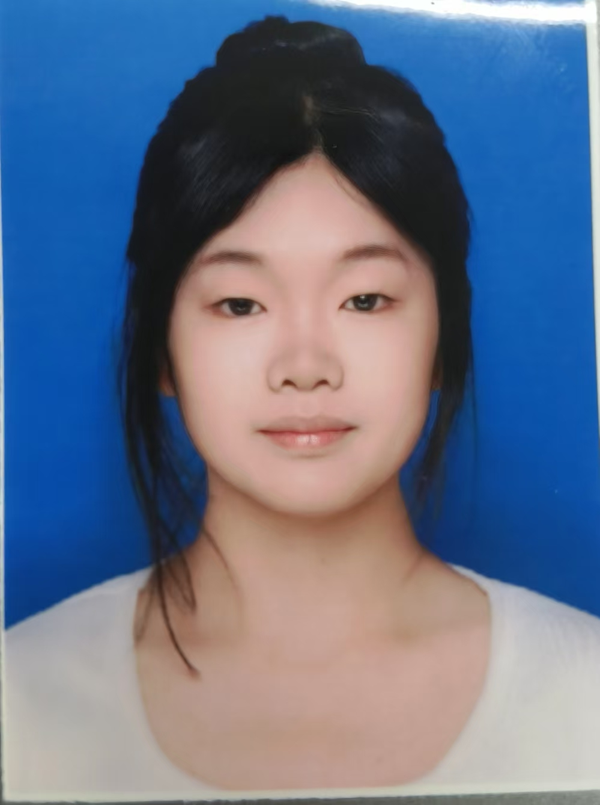

| 姓名 | 李云 | 性别 | 女 | 年龄 | 19 |  |
|---|---|---|---|---|---|---|
| 籍贯 | 山东省潍坊市 | 联系电话 | 188888888 | 电子邮箱 | 1235@qq.com | |
| 学历 | 大学本科 | 健康状况 | 良好 | 婚姻状况 | 未婚 | |
| 求职意向 | 专业：软件工程 | 毕业院校：鲁东大学 | ||||
| 技能证书 | 无 | |||||
| 个人特长与爱好 | 羽毛球 | |||||
| 自我评价 | 在过往的学习和工作中，我始终保持着对知识的强烈渴望以及对工作的高度热忱。在学习阶段，凭借不懈的努力，不仅掌握了扎实的专业理论知识，还积极参加各类实践活动，将理论与实际相结合，锻炼了自己的动手能力。步入职场后，我凭借良好的沟通和团队协作能力，与同事建立了高效的合作关系，成功推动多个项目的顺利开展。面对工作中的难题，我从不退缩，而是通过查阅资料、请教他人等方式，努力找到解决方案，这极大地提升了我的问题解决能力。此外，我善于自我反思，定期回顾自己的工作表现，总结经验教训，持续优化工作方法，提高工作效率。我坚信，这些经历和能力，能助力我在未来的岗位上发光发热 。 | |||||